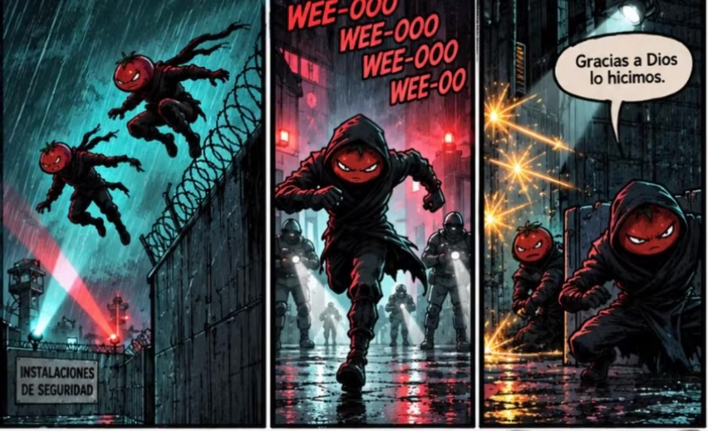

Escape five worlds
Jungle trails, a factory base, a truck depot, crowded Chinatown and a snowy mountain village, 25 levels in all.
Spy chase · language game
A secret agent tomato has uncovered an illegal sauce factory. Now every guard is after him. Run, jump and slide through five worlds to escape and warn the other tomatoes, and learn a new language on the way.
Free to download · English, Spanish, French and Tagalog

An adventure game first, a language course second. Tomato Escape is a fast chase game: dodge guards, leap cliff gaps, cross rope bridges, roll under branches and outrun the alarm across the Jungle, the Factory Base, the Parking Lot, Chinatown and the Snowy Village. Every gate is locked by a word, and translating it is the only way through.
Finish the game and you will have practiced 250 vocabulary words. Play in Easy mode and pick the right translation from four answers, or in Hard mode and type it yourself. On first launch the menus follow your phone's language when it is English, Spanish, Tagalog/Filipino or French, and each language keeps its own progress.
Un juego de aventura y persecución que combina acción y aprendizaje de idiomas. Un tomate espía ha descubierto una fábrica ilegal de salsa. Ahora debe escapar de sus guardias y avisar a los demás tomates antes de que sea demasiado tarde. Corre, salta, rueda y esquiva obstáculos a través de cinco mundos y 25 niveles, usando traducciones para superar las barreras de vocabulario.
Es un juego ante todo y una aplicación educativa en segundo lugar. Practica 250 palabras a lo largo de la aventura, con las combinaciones inglés–español, inglés–tagalo e inglés–francés en ambos sentidos. Elige entre varias respuestas en el modo Fácil o escribe tus respuestas en el modo Difícil.
Isang larong pakikipagsapalaran at habulan na may kasamang pag-aaral ng wika. Natuklasan ng isang espiyang kamatis ang isang ilegal na pabrika ng sarsa. Kailangan niyang takasan ang mga guwardiya at babalaan ang ibang mga kamatis bago mahuli ang lahat. Tumakbo, tumalon, gumulong at umiwas sa mga hadlang sa limang mundo at 25 antas, gamit ang tamang salin upang makalusot sa mga tarangkahan ng bokabularyo.
Laro muna ito, at pang-edukasyong app din. Magsanay ng 250 salita sa buong pakikipagsapalaran gamit ang Ingles–Espanyol, Ingles–Tagalog at Ingles–Pranses, sa alinmang direksiyon. Sa Madaling mode, piliin ang tamang sagot; sa Mahirap na mode, i-type ito.
Un jeu d'aventure et de poursuite qui fait découvrir les langues au cœur de l'action. Une tomate espionne a découvert une usine de sauce illégale. Elle doit maintenant échapper aux gardes et prévenir les autres tomates avant qu'il ne soit trop tard. Courez, sautez, faites des roulades et évitez les obstacles à travers cinq mondes et 25 niveaux, en traduisant les mots pour franchir les passages de vocabulaire.
C'est d'abord un jeu, puis une application éducative. Entraînez-vous sur 250 mots au fil de l'aventure, avec les paires anglais–espagnol, anglais–tagalog et anglais–français, dans les deux sens. Choisissez parmi plusieurs réponses en mode Facile ou saisissez vos réponses en mode Difficile.
How it plays
Jungle trails, a factory base, a truck depot, crowded Chinatown and a snowy mountain village, 25 levels in all.
Rope bridges, collapsing trails, searchlights, thin ice, avalanches and prowling jaguars, each level with its own path and time of day.
One try per gate. Pick the answer in Easy mode or type it in Hard mode. Miss it and the guards catch you.
The story

Game first
Tomato Escape is built to be played for fun. The language learning comes along with every gate you break through: 250 words in English, Spanish, French or Tagalog.